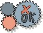

| Артефакт: Тест разработчика |
|
|  |
| Этот артефакт осуществляет традиционное назначение работы по следующим категориям: Тестирование блоков, большая часть Тестирования интеграции и некоторые аспекты того, что чаще всего называется Тестированием системы. |
Домены: Реализация
Типы рабочих продуктов: Решение |
|
Назначение
|
Назначением теста разработчика является обеспечение реализации подмножества требуемых тестов рациональным и эффективным
способом.
|
Взаимосвязи
| Роли | Ответственный:
| Изменен:
|
| Задачи | Вход для:
| Выход из:
|
Описание
| Краткая схема |
Каждый тест разработчика должен рассматривать различные аспекты, включая следующее:
-
Основные требования к компьютерному аппаратному обеспечению; например, процессоры, оперативная память, жесткий
диск, устройства ввода/вывода интерфейса
-
Основная базовая среда программного обеспечения; например, операционная система и основные инструментальные
средства, такие как электронная почта и календарь
-
Дополнительное специализированное периферийное аппаратное обеспечение ввода/вывода; например, сканнеры штрихового
кода, чековые принтеры, кассы и сенсорные устройства
-
Необходимое программное обеспечение для специализированного периферийного аппаратного обеспечения ввода/вывода;
например, драйверы, интерфейс и шлюзовое программное обеспечение
-
Минимальный набор программных инструментов, необходимых для содействия деятельностям тестирования, оценки и
диагностики; например, проверка памяти, автоматическое выполнение тестов и так далее
-
Требуемые параметры конфигурации опций аппаратного и программного обеспечения; например, разрешение дисплея,
выделение ресурсов, переменные среды и так далее
-
Необходимые "заданные" расходные материалы; например, заполненные наборы данных, этикетки чекового принтера и так
далее.
|
Ключевые условия
| Большая часть тестов разработчика создается в тот же отрезок времени, что и компоненты программного обеспечения, которые
следует протестировать. Тесты, запускаемые запросами на изменения, разрабатываются после разработки компонентов, и в
большинстве случаев являются недолговечными, если их задачей является только воспроизводство дефекта в более контролируемой
среде. |
Доводка
| Опции представления |
Тесты разработчика могут иметь свойства, перечисленные в приведенной ниже таблице.
Уровень формализма для тестов разработчика может изменяться, так что некоторые фрагменты следующей информации могут
отсутствовать или быть внесены в реализацию. В общем, чем крупнее и важнее тестируемый компонент, тем больших усилий
потребует обслуживание тестов разработчика.
|
Имя свойства
|
Краткое описание
|
|
Имя
|
Уникальное имя, применяемое для идентификации данного теста разработчика.
|
|
Описание
|
Краткое описание теста разработчика, обычно дающее некоторые указания на сложность и рамки теста.
|
|
Назначение
|
Объяснение того, что представляет данный тест разработчика и почему он важен.
|
|
Зависимые элементы тестирования и оценки
|
Некоторая форма трассируемости или отображения зависимости на определенные элементы, такие как отдельные
требования, которые следует учесть.
|
|
Предварительные условия
|
Начальное состояние, которое должно быть достигнуто до выполнения теста разработчика.
|
|
Инструкции
|
Либо пошаговые инструкции по выполнению теста вручную, либо машиночитаемые инструкции, которые при
выполнении подают на программное обеспечение сигналы, похожие на действия, которые бы предпринял
соответствующий субъект, человек или другой субъект.
|
|
Точки наблюдения
|
Одно или несколько местоположений в тесте разработчика, где будет наблюдаться некоторый аспект состояния
системы и сравниваться с ожидаемым результатом.
|
|
Управляющие точки
|
Одно или несколько местоположений в тесте разработчика, где может произойти некоторое условие или событие,
которое требуется принять во внимание для определения следующей инструкции.
|
|
Точки регистрации
|
Одно или несколько местоположений в инструкциях теста разработчика, где некоторый аспект состояния
выполняемого сценария теста записывается для возможности ссылки на него в будущем.
|
|
Постусловия
|
Результирующее состояние, в котором следует оставить систему после выполнения теста разработчика.
|
Задачей в целом является реализация простой и эффективной структуры тестирования разработчика. Для "единовременных"
тестов следует избегать создания дополнительной документации. Особое внимание следует уделить тестам, которые будут
использоваться как регрессивные тесты для подсистем или более "изменчивых" компонентов, в терминах документирования,
возможности обслуживания, эффективности и устойчивости.
|
Дополнительные сведения
© Copyright IBM Corp. 1987, 2006. Все права защищены..
|
|